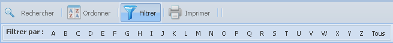

La barre d'outils des éléments de
données
Fonction « Filtrer
» les éléments de données

La fonction « Filtrer »
permet de filtrer les résultats par une lettre de
l'alphabet (A – Z). Cette option de filtrage s'applique
uniquement au niveau du nom de l'« élément de
données ». Le filtrage par lettre affiche tous les
éléments de données de toutes les vues dont
le nom commence par la lettre sélectionnée.
- Cliquez sur le bouton « Filtrer » de la barre d'outils; la
fonctionnalité de filtrage par alphabet apparaîtra
en bas la barre d'outils;
- Cliquez sur une lettre de l'alphabet pour
filtrer les éléments de données;
- Les résultats de la grille principale
seront filtrés par l'option sélectionnée.
Pour revenir à la liste complète, cliquez sur
l'option « Tous » du
sous–menu.